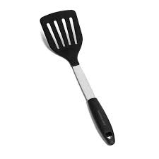
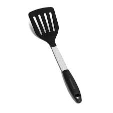
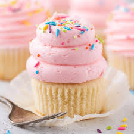

04/09/08: Spatulas
Yesterday, I went to the store and got some much needed spatulas! (what better way to say I love myself than to buy myself a spatula?)
So fresh and so clean
Yesterday, I went to the store and got some much needed spatulas! (what better way to say I love myself than to buy myself a spatula?)
My favorite cartoon character is cookie, and my favorite dessert is cupcakes. So Cookie Cupcakes are best of both the worlds. Did you know? Cookie character once said, "Sometimes me think what is love, and then me think love is what cookie is for. Me give up the last cookie for you. " I wonder if the same applies for the cupcakes? (If so, I don't think I can ever love ANYONE!)
